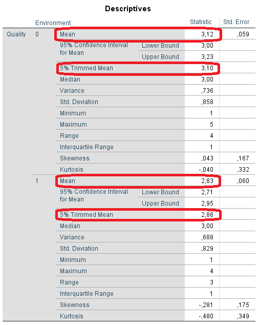
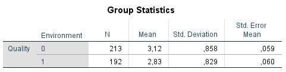
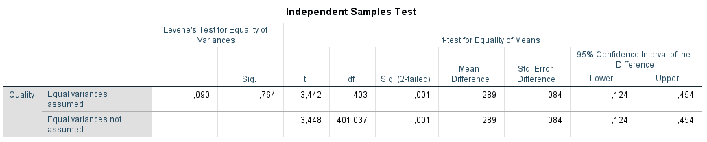

Outlier detection
For the "home" condition, there are four outliers (ID 206, 208, 209, 211) marked in the boxplot.

Normality Test
The Shapiro-Wilk test showed a significant departure from normality in both the “home” (W(213)=.884, p=.000) and “lab” (W(192)=.860, p=.000) conditions.
Independent T-Test
An independent-samples t-test was conducted to compare the speech quality ratings in home and lab conditions. Levene’s test for equality of variances indicated homogeneity of variances, F = .09, p = .764. There was a significant difference in the ratings for home (M= 3.12, SD= 0.858) and for lab (M= 2.83, SD= 0.829) conditions; t(403)=3.44, p=0.001, d=-0,34. Persons performing the rating process at home assessed higher ratings to the test material compared to persons performing the test in the lab.


Effect Size
To measure the effect size, we compute Cohen's D. SPSS does not
provide any function for the effect size, but this can be computed based on
the following formula:
We can read the means and standard deviations from the output of the independent t-test.
d = (2,83-3,12)/sqrt((0,858^2 + 0,829^2)/2)= -0,29/sqrt((0,74 + 0,69)/2)= -0,29/sqrt(0,715)= -0,29/0,85 = -0,34
Cohen’s effect size value (d =-0.34) suggests low practical significance.